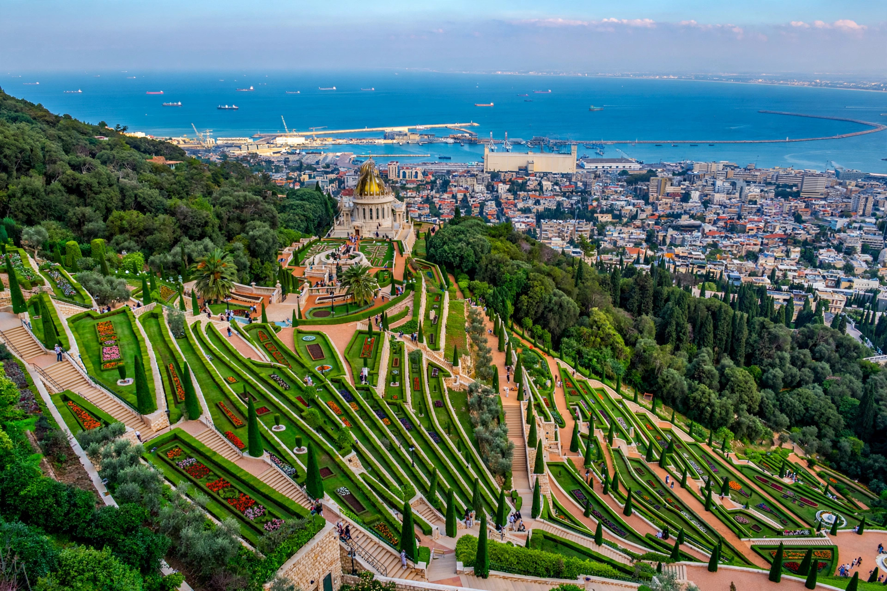

| Mount Carmel | |
|---|---|
| Country | Israel |
| Highest point | 528 m (1,732 ft) |
| Range length | approx. 39 km |
Mount Carmel (Hebrew: הַר הַכַּרְמֶל, Har HaKarmel) is a mountain range in northern Israel running southeast from the Mediterranean port of Haifa. Sacred to Judaism, Christianity and Islam and the world centre of the Bahá'í Faith, it has been inhabited for hundreds of thousands of years and contains some of the most important prehistoric cave sites in the world.

In the Hebrew Bible, Carmel is where the prophet Elijah confronted the prophets of Baal (1 Kings 18), calling down fire on the altar at what tradition identifies as El-Muhraqa. The mountain gave its name to the Carmelite order of Catholic friars, founded there in the 12th century during the Crusades.
The caves of Nahal Me'arot (Wadi el-Mughara) — Tabun, El Wad, Jamal and Skhul — preserve evidence of human occupation stretching back half a million years and contain burials of both Neanderthals and anatomically modern humans. The site is a UNESCO World Heritage Site and key to understanding the evolution and dispersal of early humans.
Mount Carmel is the administrative and spiritual centre of the Bahá'í Faith, whose founder Bahá'u'lláh designated it as the site of the faith's future world centre. The terraced Bahá'í Gardens descend nineteen terraces from the golden-domed Shrine of the Báb, completed in 1953, to the foot of the mountain in Haifa's German Colony.